[Window] WindowでFTPサーバを構築する方法
こんにちは。明月です。
この投稿はWindowでFTPサーバを構築する方法に関する説明です。
最近、Cloud Driveというクラウドストレージがあり、どんなパソコンでも簡単にファイルを共有、バックアップなどをできますが、わずか10年前には大勢の人がメールやUSBなどでファイルを共有やバックアップをたくさんしました。
メールの短所はインタネットができるところならファイルを共有できますが、ファイルバージョン管理が難しいし、データサイズのリミットがあります。USBの場合は常に所持しなければならならない不便があるし、データサイズのリミットもあります。
それでサーバを扱うデベロッパーやSEなら家やデータセンターにNASサーバを構築してFTPでファイルを共有しました。
でも、先に説明した通りにCloud driveがあるので最近はFTPを使用する頻度がたくさん低くなったし、社内ではFTPよりサンバーサーバ(samba)というネットワークドライブが楽なので最近はよく使いません。
しかし、個人的にプログラム開発上ではCloud drive apiを使うことでは少し負担があるし、社内ではサンバーサーバ(smb)よりもっとセキュリティ的だし簡単に開発できるプロトコールなのでFTPが良いではないかと思います。
Window環境ではFTPサーバを構築するために別にプログラムをインストールする必要がないし、Windowの基本パッケージであるのでインストールだけでよいです。
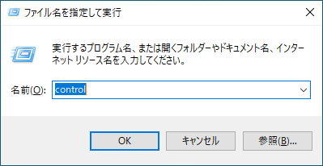
コントロールで「プログラムと機能」を開きます。
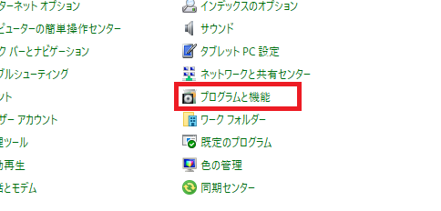
そして「Windowsの機能の有効化または無効化」を選択しましょう。
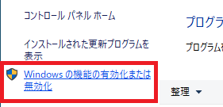
そしてFTPサーバーとIIS管理コンソールなどを選択しましょう。
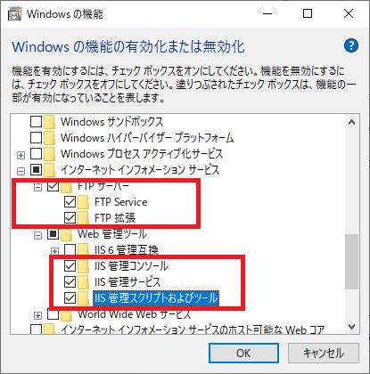
確認ボタンを押下すればインストールが開始します。
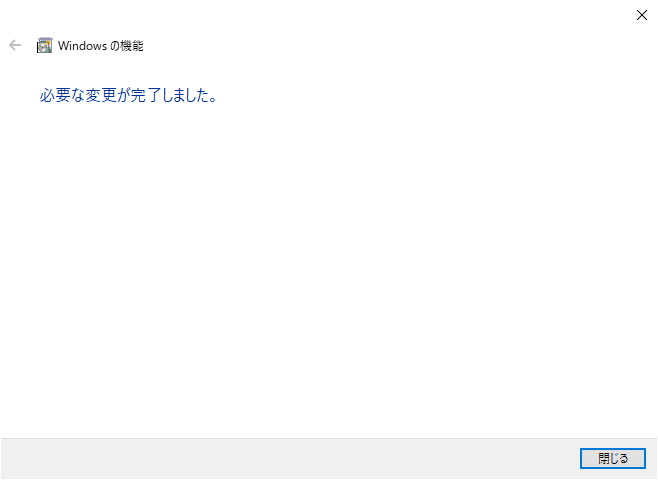
そして数分をお待ちしたらインストールが完了します。
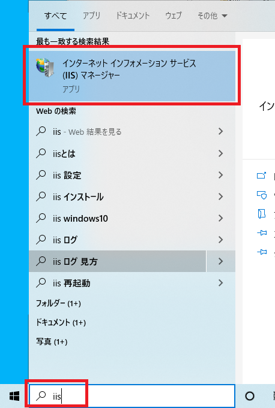
そしてプログラム検索に「iis」というコマンドを打ったらインタネットインフォメーションサービス(IIS)マネージャーのプログラムが検索されますが、それをクリックして実行します。
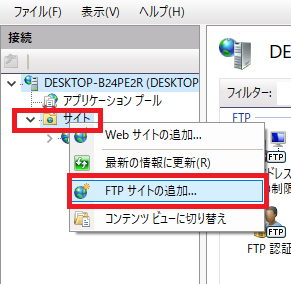
そしてサイト項目でマウス右をクリックすればFTPサイトの追加項目があります。
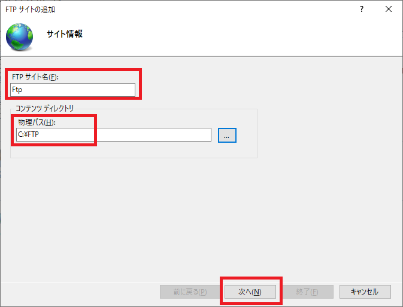
サイトの名前を入力してFTPサーバーでファイルアップロード及びダウンロードするパスを設定します。
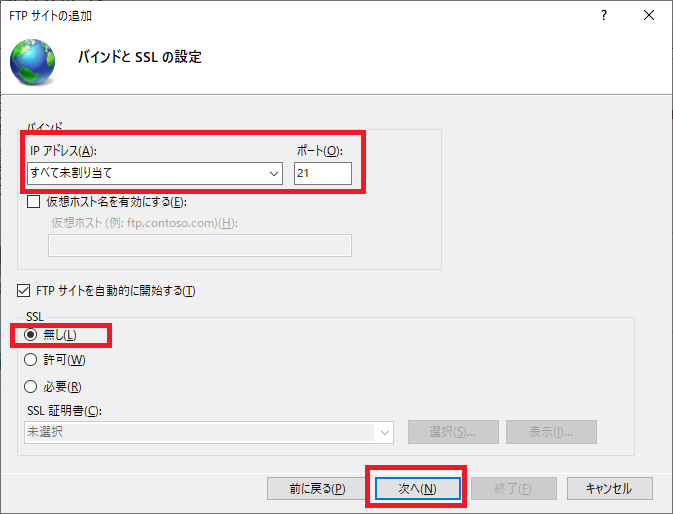
もしかして別にホスト設定があればIP設定でホストドメインを入力します。でも別に制限がなければ指定しなくてもよいです。
また、SSL設定が必要なら証明書を入れるしなければ無しで設定します。
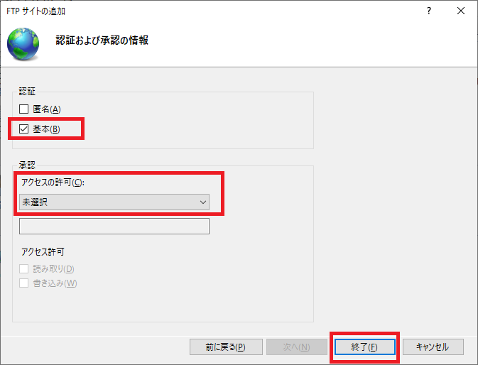
そして最後に認証は匿名ユーザが接続できるようにしようと思えば匿名を選択しますが、普通はセキュリティのため設定しません。
基本はチェックします。承認はまだユーザを作成してないので「未選択」を設定します。
これからユーザを追加します。
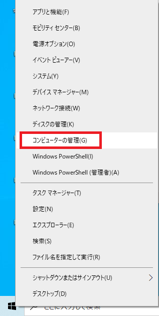
Windowメニューでマウス右クリックしてコンピューターの管理を開きます。
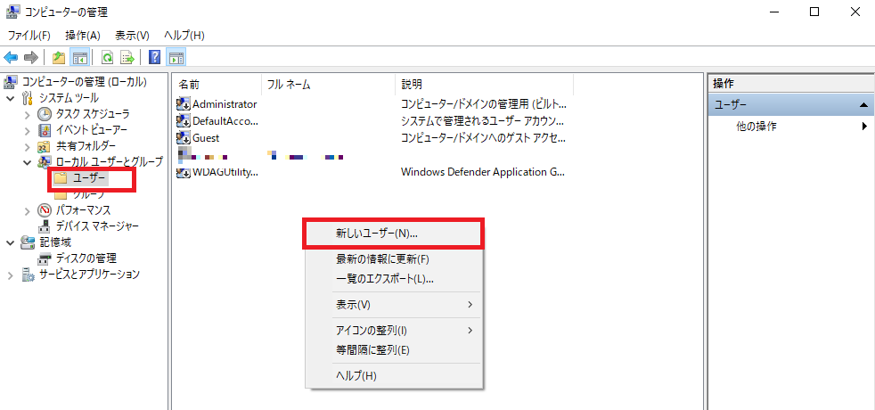
そしてローカルユーザでユーザを選択して「新しいユーザー」を追加します。
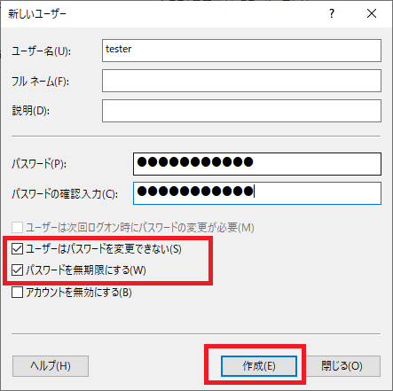
そしてユーザー名(id)を入力してパスワードを入力しましょう。
「次回ログオン時にパスワードを変更が必要」というチェックボックスはチェック解除して「パスワード変更できない」と「無期限できない」というチェックボックスをチェックします。
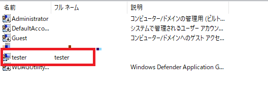
管理Windowでユーザーが追加されたことを確認できます。
またIIS(インタネットインフォメーションサービスマネージャー)に戻ります。
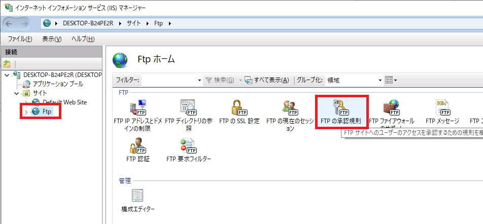
ftpを選択して「FTPの承認規則」を選択しましょう。
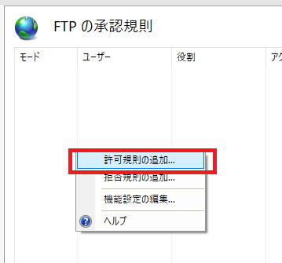
そしてマウス右クリックして「許可規則の追加」を選択します。
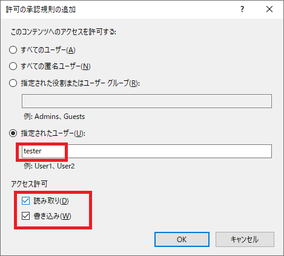
ユーザー管理で生成したユーザー名(ID)を入力して読み取り、書き込み権限を選択します。
ここまでFTP設定が完了しました。
ここからファイルエクスプローラー(Explorer)で「ftp://localhost」を接続しましょう。
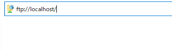
そうしたら「id」、「pw」を入力する画面が表示されます。
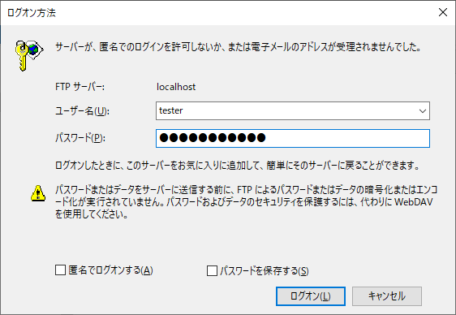
生成したユーザー名とパスワードを入力してログオンしましょう。
そうしたら接続できます。
例えでファイルをドラッグしてFTPにコピーしましょう。
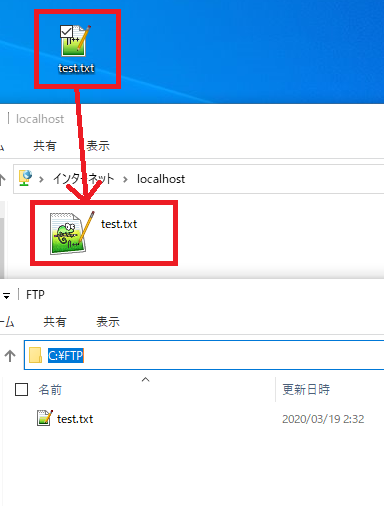
FTP設定したアップロード及びダウンロードパスを確認すれば、ファイルがコピーされたことを確認できます。
ここまでWindowでFTPサーバを構築する方法に関する説明でした。
ご不明なところや間違いところがあればコメントしてください。
- [Window] MariaDBをインストールする方法2021/10/08 18:56:05
- [Window] WindowでFTPサーバを構築する方法2020/03/19 03:27:22
- [Window] Apacheをインストール方法、サービスに登録する方法。2019/10/18 07:36:51
- [Window] WindowでExplorerのContext menuを修正する方法。2019/07/01 01:42:41
- [Project design] プロジェクトを工程(ウォーターフォール vs アジャイル)2021/10/14 18:36:04
- [C#] 51. Reflection機能を使い方 - Method2021/10/14 18:34:21
- [C#] 50. Reflection機能を使い方 - Class2021/10/13 18:34:13
- [C#] 49. Operator(演算子)のオーバーロードを使い方2021/10/12 18:28:42
- [C#] 48. IEnumerableとIEnumerator、そしてyieldキーワード2021/10/11 19:49:33
- [C#] 47. Nugetを使い方(外部ライブラリ)とデータベース(MariaDB(Mysql))を使い方、そしてトランザクション(Transaction)2021/10/08 18:58:57
- [Window] MariaDBをインストールする方法2021/10/08 18:56:05
- [C#] 46. データベース(MSSQL)に接続する方法2021/10/07 18:39:58
- [C#] 45. ネットワークソケット通信(Socket)を使い方2021/10/06 19:06:25
- [C#] 44. ファイル(FileInfo)とディレクトリ(DirectoryInfo)を扱い2021/10/05 19:29:34
- [C#] 43. ストリーム(Stream)とバイナリ(byte[])、エンコード(Encoding)、そしてusingを使い方とIDisposableインターフェース2021/10/04 18:33:04
- [C#] 42. ファイルを扱い(IO)とファイルメタデータ(FileInfo)を使い方2021/10/01 20:10:21
- [C#] 41. Taskクラスとasync、awaitを使い方2021/10/01 18:59:14
- [Javascript ] WebのFull calendar(スケジュールカレンダー)の使い方法2021/07/15 21:35:36
- [Java] 56. Web serviceのサーブレット(Servlet)で初期化作業(properties設定)2021/07/02 17:10:36